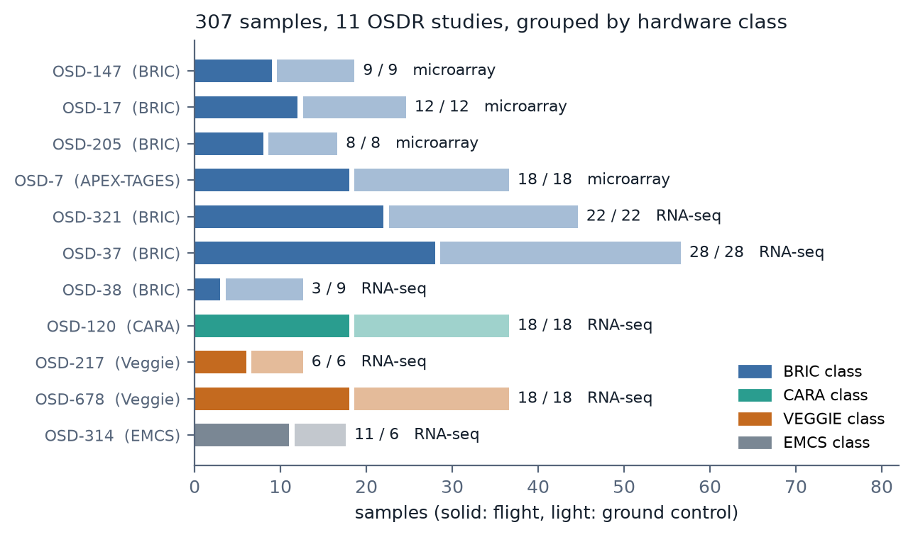
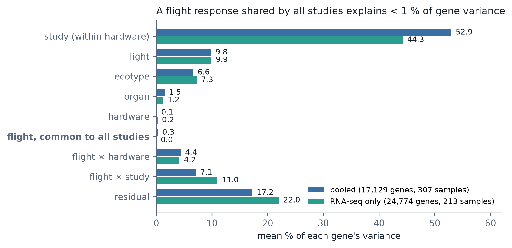
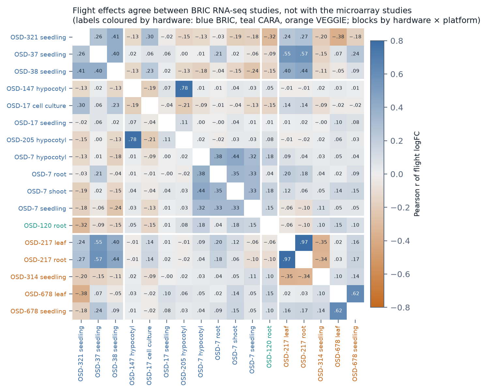
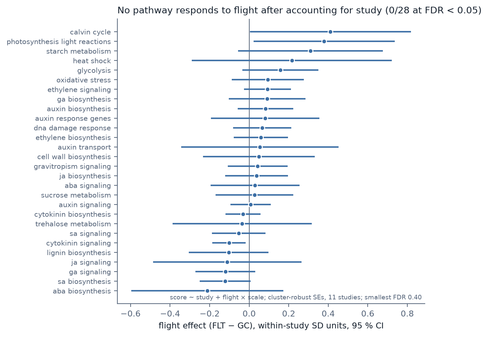
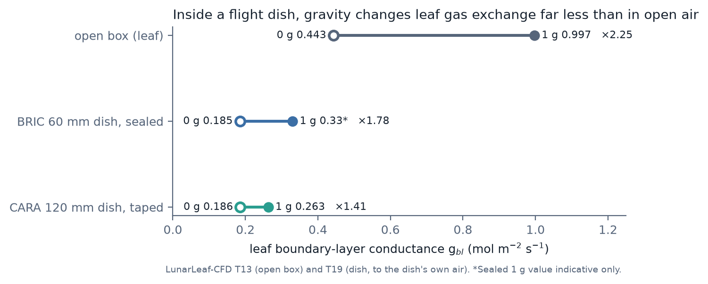

Airflow Omics · NASA OSDR & CFD
A study-aware re-analysis of 307 Arabidopsis spaceflight transcriptomes from 11 NASA OSDR studies, coupled to lattice-Boltzmann CFD of the BRIC, CARA and VEGGIE growth hardware.
The flight response is real but largely specific to each experiment.
A flight effect shared by all 11 studies explains under 1 % of gene variance, against 7–11 % for study-specific flight effects. Within BRIC hardware, only the RNA-seq studies agree with each other. Neither CFD-predicted boundary-layer conductance nor carbon supply explains which studies respond, and the CFD shows why. Inside a real flight dish, gravity changes leaf gas exchange only 1.25–1.8-fold, and sealed BRIC dishes run short of CO₂ on the ground as well as in orbit.
Mean share of gene variance explained by a flight effect common to all studies (0.3 % pooled, under 0.01 % in RNA-seq alone).
Median correlation of flight effects between BRIC RNA-seq studies. The BRIC microarray studies agree with none of them.
Pathways with a flight effect or CFD dose-response once study structure is respected.
307 samples from 11 studies, in four hardware classes.

tables/reanalysis_2026-10/expression_metadata_with_cfd_v2.tsv.A flight response common to all studies explains under 1 % of gene variance.

followups/variance_partition_summary_v2.tsv.BRIC RNA-seq studies share a flight signature; the BRIC microarray studies detect almost none.

No pathway responds once study structure is respected.

The CFD explains why no boundary-layer dose-response appears.

Every number and figure traces to a script and a table in the repository.
| Component | Location |
|---|---|
| Findings and evidence | reports/HEADLINE_2026-10.md |
| Full re-analysis (§1–§13) | tables/reanalysis_2026-10/ |
| Analysis code | code/ (OSDR mining, CFD covariates, limma refits, figures) |
| Figures | figures/2026-10/ |
| Manuscript | manuscript.pdf |
| CFD model | LunarLeaf-CFD |